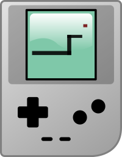

By using the knowledge about Object Oriented Programming as well as how to use the turtle module in python and watching an online corse I manage to build the famous snake game. Snake game is one of the most famous mobile games and it is used to be one of my favourite games way back when I had my very first Nokia mobile phone I remember spending hours and hours playing it at night when I can’t go to sleep. Of course compared to the iPhone today it is very simple but still super addictive. The code uses the turtle module to create a moving object(snake) and control it using keyboard, and there is another object which you try to control the snake to get to touch it, and when you did the snake gets taller and you score and if any collision with the walls or the snake’s tail happened the game restarts. The code keeps track of the high score and store it in an external file.
